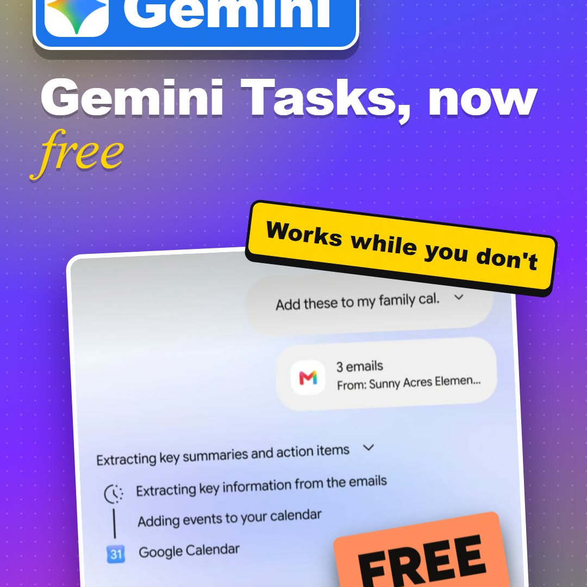

Tasks in Gemini: 5 recurring tasks to set up
Five jobs you describe once and Gemini runs for you in the background, with the prompts to copy. For anyone on the free plan.

Quick start
- Open the Gemini app on your phone or Mac, or go to gemini.google.com, and sign in with a personal Google Account.
- Next to the prompt box, flip the toggle from Chat to Task.
- Paste one of the prompts below, and say when it should run.
What it is
Tasks in Gemini works on a job for you in the background, from start to finish, and tells you when the result is ready. A task can repeat on a schedule, so a job you set up once keeps running. Google tested it as a beta called Spark with subscribers, then renamed it Task.
Before you start
You need to be 18 or over, signed in with a personal Google Account (not a work or school one), with Gemini's History on.
It is free without a Google AI subscription in the US, Japan, South Korea, Canada, Australia and India. In most other countries where Gemini works it needs Google AI Pro or Ultra. It is not available in the European Economic Area, the UK, Switzerland or Nigeria for now.
What it costs you on the free plan: up to 10 active schedules, each running at most once a day in a time window you pick (overnight, daytime or evening). With Google AI Pro or Ultra: up to 50 schedules, at set times, hourly to yearly. Tasks also count towards Gemini's usage limits, which grow with higher plans.
Calls to businesses and payments through Google Pay are US only for now.
Step 1: Pick a window
On the free plan a schedule runs once a day, around the same time, inside its window. A morning briefing works best overnight, so it is ready when you wake up. Inbox and calendar chores fit the evening.
Step 2: Write the job once
Say what to do, where to look and what to send back. Put the schedule in the same message ("every day, overnight"). Gemini sets it up in the task thread, and you can find it later on the Scheduled page.
Step 3: Check the first run
Open the task thread after the first run. If the result is off, reply in the thread with the change ("shorter", "skip promotions"). Gemini updates the job without losing what it did.
Try these
Copy one, change the parts in [brackets], and add the schedule at the end.
- Morning briefing:
Every day, overnight: read my inbox and my calendar for today. Give me the 3 emails that need a reply, my meetings with times, and anything due today. Keep it under 150 words. - Inbox tidy-up:
Every evening: find today's newsletters and promotions in my Gmail, summarise the 5 most useful in one line each, and list the senders I never open so I can unsubscribe. - Bills and renewals:
Every day, daytime: look through my email for bills, subscriptions and insurance renewals due in the next 7 days. List each with the amount, the due date and the sender. - Family calendar:
Every evening: check today's emails from [school or club name] for dates, events and deadlines, and add each one to my Google Calendar with the details in the note. - Price watch:
Every day, daytime: check the price of [product] at [store]. Tell me only if it drops below [price], with the price you found. - Bonus, tomorrow's free block:
Every day, evening: look at my calendar for tomorrow and tell me the one block of free time I should protect for [focus work, the gym, family].
Gotchas
- Run times are approximate: a schedule runs around its time, not to the minute.
- On the free plan you get 10 active schedules. To add an eleventh, pause or delete one on the Scheduled page.
- Gemini can make mistakes. Check what it adds or sends, and don't schedule anything you'd find sensitive to run on its own.
- Never type passwords or card numbers into the task thread. When a site needs them, take over the browser and type them on the page yourself.
- To stop a task: pause or delete its schedule on the Scheduled page, or press Stop in the task thread.
Links
- Google's announcement: https://blog.google/innovation-and-ai/products/gemini-app/tasks-in-gemini-free-new-features/
- Manage your tasks in Gemini (help): https://support.google.com/gemini/answer/17094507
- Schedules for tasks (help): https://support.google.com/gemini/answer/17094710
- Gemini release notes: https://gemini.google/release-notes/
Save it
- gemini-tasks-guide.pdf 308 KB